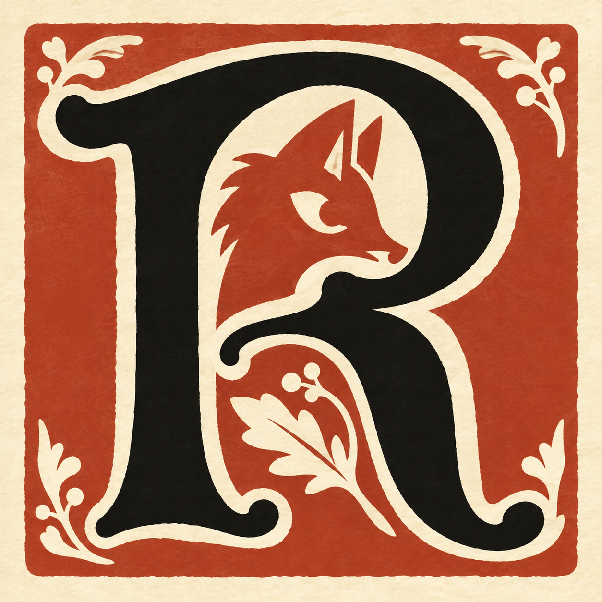
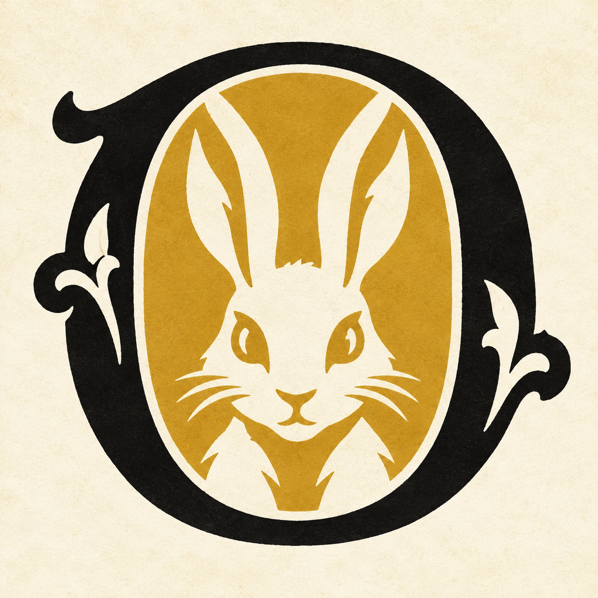
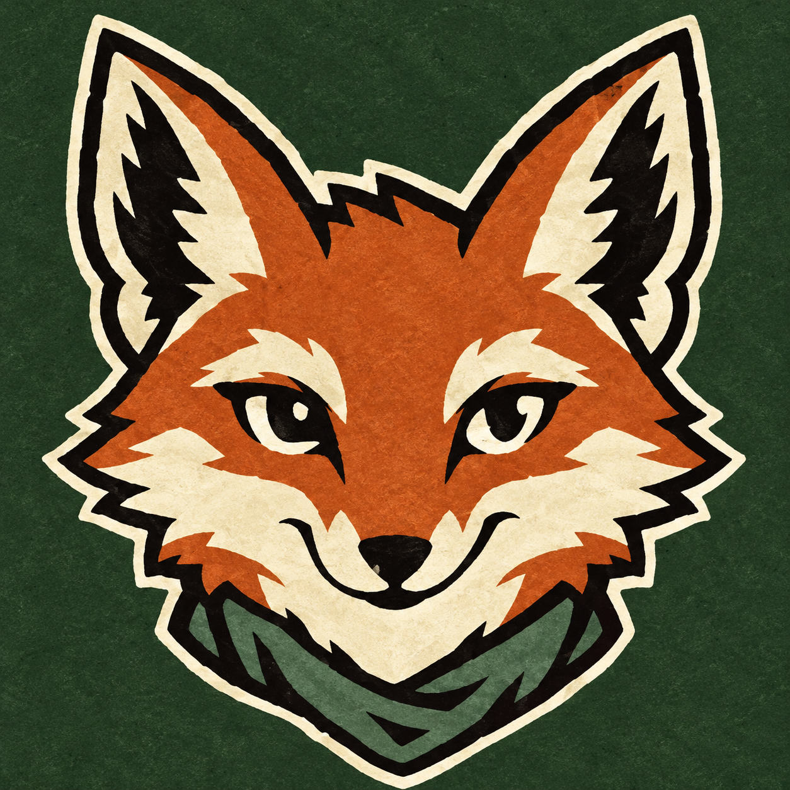
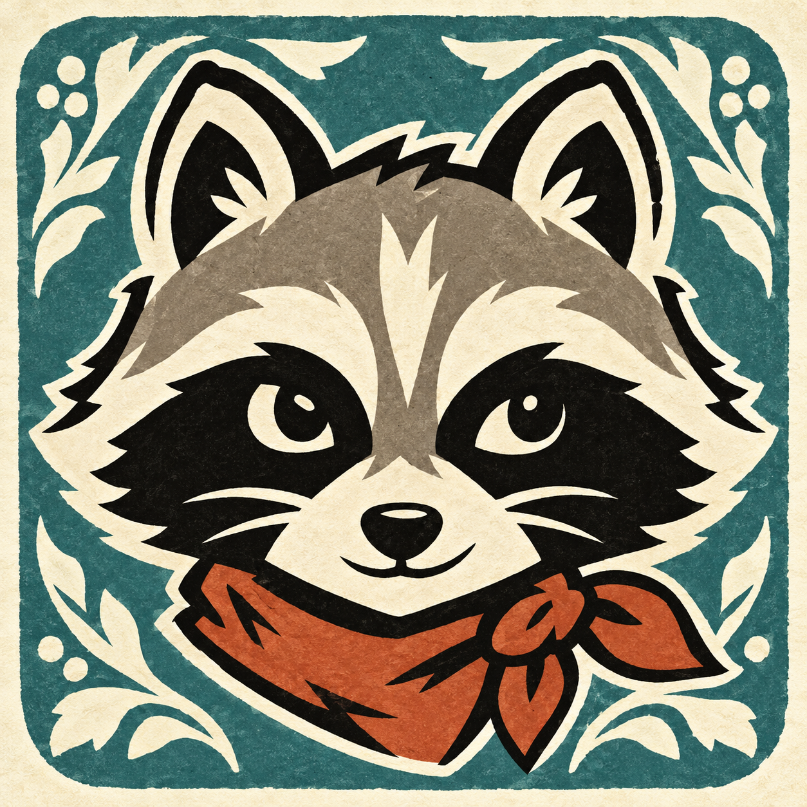

1 · The illuminated RA familiar initial with a fox in its bowl. The closest connection to the original lettering.16 px32 px64 px
2 · The rabbit OAn ornamental letter doubles as a character frame. Warm ochre and a light silhouette.16 px32 px64 px
3 · The fox scoutA character icon with a confident expression. Rust and forest green match the app.16 px32 px64 px
4 · The raccoon wandererA masked adventurer with a rust scarf. A distinct mascot with an expressive, bold face.16 px32 px64 px